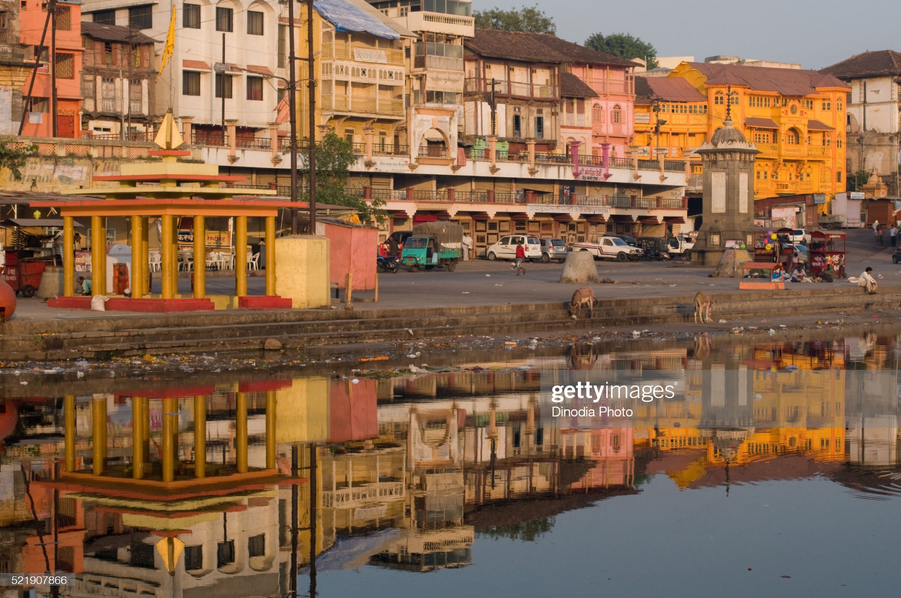
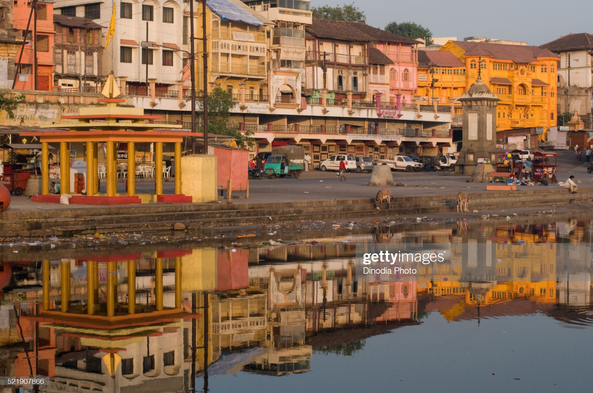

Nashik is an ancient holy city in Maharashtra, a state in western
India. It’s known for its links to the “Ramayana” epic poem. On the
Godavari River is Panchavati, a temple complex. Nearby, Lord Rama was
thought to have bathed at Ram Kund water tank, today attended by Hindu
devotees. Shri Kalaram Sansthan Mandir is an ancient shrine to Rama,
while Rama and Sita are said to have worshipped at Sita Gufaa caves.
Nashik District is located between 18.33 degree and 20.53 degree North latitude and between 73.16 degree and 75.16 degree East Longitude at Northwest part of the Maharashtra state, at 565 meters above mean sea level. The District has great mythological background. Lord Rama lived in Panchvati during his vanvas. Agasti Rushi also stayed in Nashik for Tapasya. The Godavari river originates from Trimbakeshwar in Nashik. One of the 12 Jyotirlingas also at Trimbakeshwar. Nashik has to its credit many well known and towering personalities like Veer Sawarkar, Anant Kanhere , Rev. Tilak, Dadasaheb Potnis, Babubhai Rathi, V.V. Shirwadkar and Vasant Kanetkar just name few. Nashik is also known as Mini Maharashtra, because the climate and soil conditions of Surgana, Peth, Igatpuri resembles with Konkan. Niphad, Sinnar, Dindori, Baglan blocks are like Western Maharashtra and yeola, Nandgaon, Chandwad blocks are like Vidarbha Region. Nashik, Malegaon, Manmad, Igatpuri are some of the big cities situated in the Nashik District.
 
